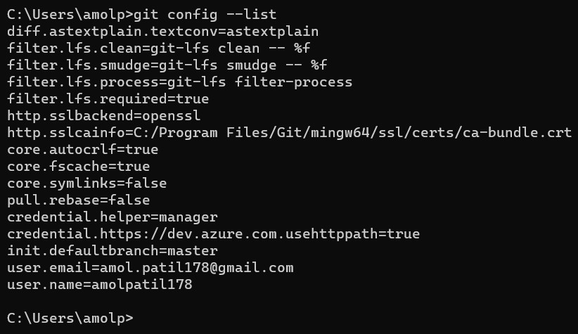

Git Notes
What is Git and why do we need?
Git is a version contol tool. Lets assume we have updated some code on day 1, and made few more changes in code on day2 and then made some changes on day 3. But there is some problem on day 3 updates and if you want to go back to day changes. Hence we need version control tool. It also keeps track changes in each version. It mainly used for project collabrations.
What is difference between Git and GitHub
| GitHub | Git |
|---|---|
| Its a Service | It is a Software/Tool |
| It hosts Git repository/folder/source code | It controls the code versiona and keeps track of code changes |
| provides GUI interfaces | It workss through CLI (command line interface tool) |
| It is maintained on web/cloud | It is intalled and maintained locally |
Refer below commands for git configurations
This command is used to know git configurations : git config --list
the result of this command will be like this

Now lets say if we want to change the user name. Then we can us this command: git config --global user.name "amolpatil178"
Below is workflow of Git
Whenever create a directory and let's say we are working on files in that direactory. If we want to push this directory on Git, we need to undestand its flow. There are 4 terms we need to understand : Working directory -> Staging area -> local reposiroty -> remote repository
- Working directory : The directory in which your code files are.
- Staging area : This is the space where git track the files in our directory.
- local reposiroty : This is our local repository connected to Git
- Working directory : This is our remote repository and pushed on github
If we compare with actual git commands:
Working directory -> Staging area -> local reposiroty -> remote repository
dire:UDEMY_GITHUB -> ...git add.. -> ...git commit... -> .....git push....
To know which files are in our workign directory : ls
 if we want know hidden files our workign directory :
if we want know hidden files our workign directory : ls -a
The command git status is used to know the status of tracked and untracked files in staging area. So we need to move our working directory to staging area hence we need to use command git init. And now if we run git status, you can see there are untracked files which means they are not added to staging area yet.
So to add the files in staging area, we use command : git add file_name1 file_name_2 or if we want to add all files to staging area then we can use git add .
Now our files are in staging area and there are no untrackde files. But lets say if we modify the files in working directory. then again we need to add it in staging area using git add. we can see in below image :
 So it means Git keeps trcak of change in code i.e. change contol.
So it means Git keeps trcak of change in code i.e. change contol.
Now lets say we don't want to add changes to staging area which are modiefied in one of the file. It means we can unstage the modification and go back to previuos changes. So lets use command git diff to know which changes are made.
 Here you can see the '-' sign denotes this is modifeid with content in '+' sign.
Here you can see the '-' sign denotes this is modifeid with content in '+' sign.
lets say we want to unstage change then we can use git restore file_name